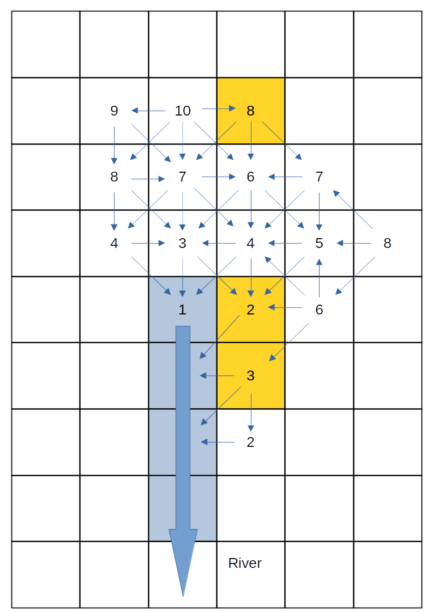
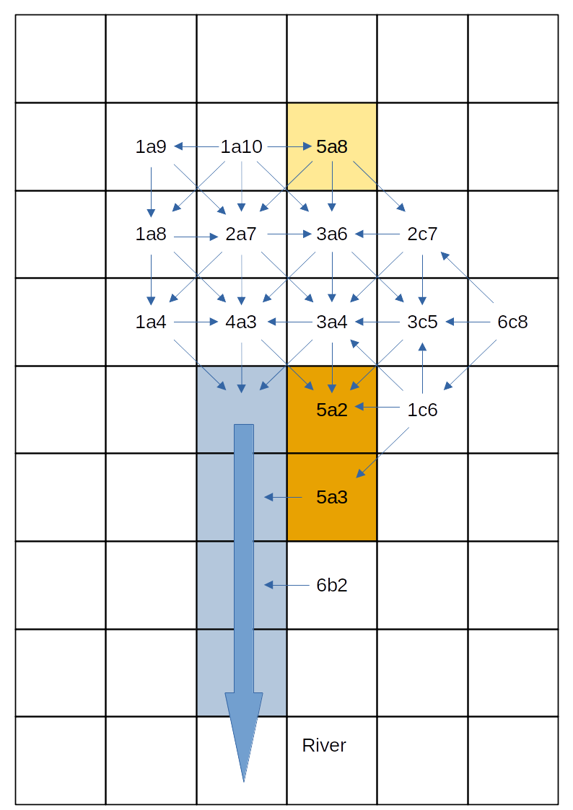
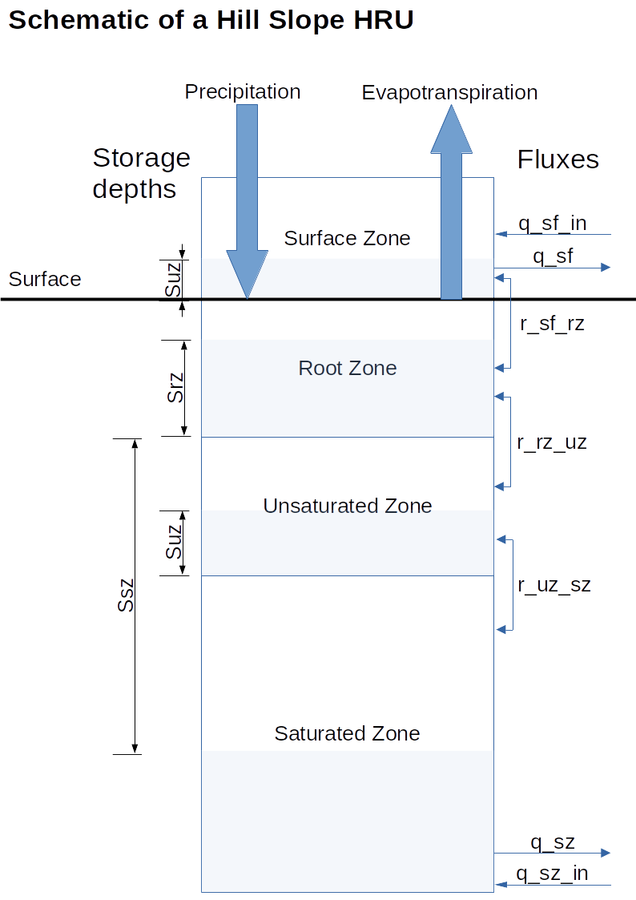
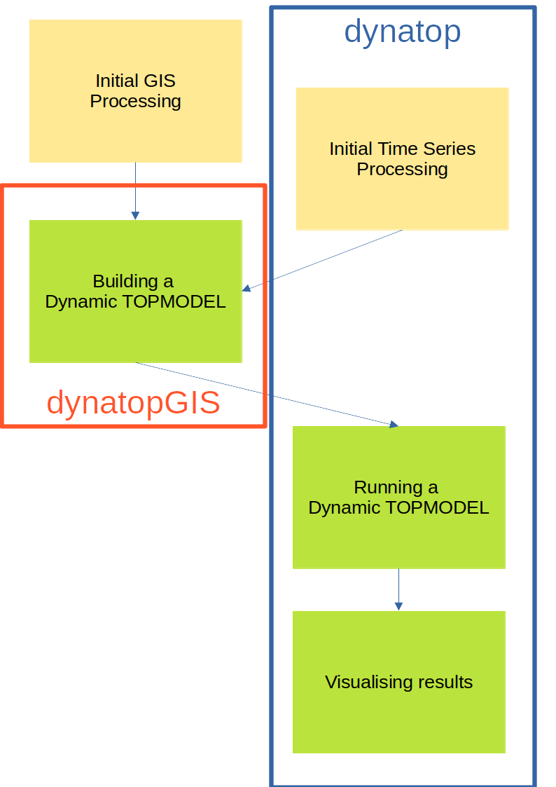

Information before a chapter.
1 Introduction
This training course is split into two parts. Part 1 aims to:
- Provide an outline of Dynamic TOPMODEL as implemented in the
dynatopanddynatopGISpackages - Demonstrate the use the
dynatopanddynatopGISpackages with a hands on example - Give some suggestions as to the effective use of the
dynatopanddynatopGISpackages
Part 2 of the course is targeted at those that wish to extent or develop the packages and covers:
- Looking at the source code of
dynatopby forking and cloning the software repository - Altering and building the source code
1.1 Funding
al;kkjsdf;lajkdf
This chapter was generated from index.Rmd.
Information before a chapter.
2 Prerequisites
This is a course on hydrological modelling using a R software package. Part 1 presumes that you have at least a basic knowledge of hydrology and ideally some experience of R. Part 2 requires a more detailed knowledge of R along with some knowledge of the git version control system.
Useful primers for R can be found on multiple websites such as that of Hadley Wickham or on CRAN but complete knowledge of their contents is not expected.
2.1 Software
2.1.1 Part 1
To make use of the examples on which Part 1 of the course is based requires
2.1.1.1 An installation of R 4.4.0 or above
Installation instructions for R are available from CRAN for Linux, Windows and Mac. Full details of the R version and packages used in building this version of the training material can be found here.
2.1.1.2 A suitable text editor for altering the R scripts.
While it is possible to complete the course using the built in R GUI’s for Windows and Mac it is recommended to install an editor with syntax highlighting. Popular choices include the Rstudio IDE, VSCode (Instructions here) or Emacs with ESS all of which provide an integrated development environment.
2.1.1.3 Installed copies of dynatop and dynatopGIS
These and there dependencies can be install in the standard way for R packages. At the R command prompt type
install.packages('dynatop', repos =c('https://waternumbers.r-universe.dev','https://cloud.r-project.org'))
install.packages('dynatopGIS', repos = c('https://waternumbers.r-universe.dev', 'https://cloud.r-project.org'))
2.1.2 Part 2
For completing Part 2 of the course which focuses on developing dynatop further software is required.
2.1.2.1 An installation of the git version control system
Details on installing git can be found on the software’s webpage. It is presumed that git is available from the command line.
2.1.2.2 An installation of the pandoc universal document converter
Pandoc provides installation instructions.
2.1.2.3 Tools for building R packages which include source code
The most efficient method of installing the tools required for building R packages depends upon the platform:
- Windows: a single tool chain Rtools is available.
- Mac: requires Apple Xcode and GNU Fortran compiler. Details of the GNU Fortran compiler version and other libraries that may be required are provided on CRAN
- Linux: ensure that gcc and gcc-c++ compilers are installed.
2.1.2.4 An account on github
This is required to fork and alter the source code.
2.2 Data and Scripts
Download the data for the examples as a zip file. Extracting this should give a directory “eden_data” with four subdirectories. In the code provided is is presumed that the working directory of the R session is “eden_data”.
To save copying and pasting from the web pages the R code used in the training course is available. These scripts should be used alongside the course material.
This chapter was generated from 02_prerequisite.Rmd.
Information before a chapter.
3 Dynamic TOPMODEL
This a simplified, opinionated introduction. The original motivation for Dynamic TOPMODEL can be found in Beven & Freer, 2001
3.1 Motivation
Dynamic TOPMODEL was originally conceived as “A new version of the rainfall-runoff model TOPMODEL is described in which the assumption of a quasi-steady state saturated zone configuration is replaced by a kinematic wave routing of subsurface flow…” allowing for ”…the simulation of dynamically variable up-slope contributing areas.”
Revisiting the idea of TOPMODEL (which has done this mainly for hill slopes, but see Peters et al. 2003) a model is formulated by
- Classifying the catchment up into areas that respond in a hydrologically similar manner
- Determining the connectivity between each of the classes
- Assigning each class to an appropriate Hydrological Representative Unit (HRU), which solves the hydrological processes for a standardised unit
In the following these aspects are outlined with reference to the
implementation of Dynamic TOPMODEL in the dynatop and dynatopGIS packages.
3.2 Classification and Connectivity
3.2.1 Classification (Part 1)
The location of areas with a hydrological similar response is only every going to be partially captured by spatial data. Past TOPMODEL and Dynamic TOPMODEL applications have used classifications based on a topographic index given by the logarithm of up-slope area divided by the local gradient. Using the up-slope area gives some spatial ordering to the classes, but (as we will see with the Eden data) it is not complete. Consider a small catchment represented by a raster of spatial cells with the following topographic index classes

1 Map of topographic index classes
Since land use could influence the evapotranspiration and infiltration properties a second classification might be desirable. For the small catchment the land use classes are shown below
2 Map of land use classes
Combing these topographic index and land use classes gives one initial class for each unique combination.
3.2.2 Connectivity
In keeping with earlier spatial analysis TOPMODEL and Dynamic TOPMODEL applications connectivity (flow directions) is assumed to be determined by the surface gradient with any down-slope region receiving flow. This gives a high degree of connectivity between the spatial cells. If a river intercepts a cell it is assumed that both the surface and subsurface flow direction change to follow the river course.The following figure shows the connectivity for the small catchment, with the river cells highlighted in blue.

3 Map of combined topographic and land use classes along with connectivity
3.2.3 Classification (Part 2)
Each class is represented by a single HRU, the inflows to which are averaged from the inflows to all the spatial cells of that class. Does this make sense for class 5a, which is both in the upper reaches of the catchment but also adjacent to the river?
The dynatop author would argue not. To represent the spatial positioning the catchment can be banded using the connectivity - all cells
in a given band receive flows only from those in a higher band. For the small
catchment this looks like the following

4 Map of the band classification
Combing this into the classification gives

5 Map of the combined classification
which further separates out the 5a class to the areas close to and further from the river. This demonstrates the banding gives a further level of spatial refinement to the classification while allowing a for simplification in the catchment representation.
Introducing the band into the classification has a further advantage. Solving the HRUs starting with those in the highest band ensures that inflows at the current time step are available for use in the numeric solution. This allow the use of computation techniques that are more robust to the choice of solution time step.
The numeric scheme implemented in the
dynatoppackage makes use of an ordering so that the HRU inflows for the current time step are available. Although other options could be used it is strongly recommended that the default banding scheme is used.
3.3 Hydrological Response Units
Each Hydrological Response Unit HRU represents a parameterised version of a different part of the hydrological system. The representation of each HRU is made up of the four zones:
- A Surface Zone representing the movement of water on the surface
- A Root Zone which controls evapotranspiration, handles the precipitation input and flux of water to the unsaturated zone
- A Unsaturated Zone which represented the water between the root zone and the saturated subsurface
- A Saturated Zone representing the saturated subsurface
The following schematic shows the four zones and the fluxes between them

6 Schematic of the Hill slope HRU
As shown in the schematic fluxes are passed between the HRUs at two levels, the surface and the saturated zones.
To allow for some flexibility in the dynamics of the HRU different
representations can be used for each zone. The governing equation and
numerical solution of these are given in a vignette of dynatop. A few
key points are:
- The lateral flow from the Surface and Saturated Zones is computed using Muskingham approximations.
- Evapotranspiration is proportional to the percentage saturation of the Root Zone
- Flow from the root zone to the Unsaturated Zone can occur only when the Root Zone is full
- The Unsaturated Zone is represented by a tank whose time constant depends upon the deficit of the Saturated Zone
- The lateral flow from the Saturated Zone is controlled by the saturated storage deficit through a transmissivity profile.
This chapter was generated from 03_dynamic_topmodel.Rmd.
Information before a chapter.
4 dynatopGIS & dynatop
The following schematic outlines the stages resulting a working Dynamic
TOPMODEL for a catchment. It highlights where the dynatopGIS and dynatop
packages fit into this process.

construction”}7 Schematic of a Dynamic TOPMODEL construction
As we will see in the example the dynatopGIS package can help
- Compute standard variables for classification (such as the topographic index)
- Compute the spatial ordering of the HRUs
- Build classifications of the catchment
- Construct models suitable for
dynatop
The dynatop package allows simulation and visualisation of Dynamic TOPMODELs as well as
providing some helper for processing time series input data.
Although in this training presumes that model for dynatop are generated
using dynatopGIS this need not be the case so long as the inputs to
dynatop are of the correct format.
5 Implementation notes
The dynatopGIS and dynatop packages implement structured, object orientated, data
flows. The packages are written using the object orientated framework
provided by the R6 package. This means that some aspects of working with the
objects may appear idiosyncratic for some R users. In this training these problems are largely obscured, except for the
call structure. However, before adapting the code, or doing more complex analysis
users should read about R6 class objects (e.g. in the R6 package vignettes
or in the Advanced R book). One particular gotcha is when copying an object. Using
my_new_object <- my_object
creates a pointer, that is altering my_new_object also alters
my_object. To create a new independent copy of my_object use
my_new_object <- my_object$clone()
This chapter was generated from 04_dynatopGIS_dynatop.Rmd.
Information before a chapter.
6 River Eden Example
The first half of the training course is working through an example application based on the Eden Catchment in Cumbria, UK (see Figure below). At the Sheepmount gauging station downstream of Carlisle, which is the lowest monitored point in the catchment, the total area is 2400 km$^2$.
The River Eden and its main tributaries including the Rivers Eamont, Irthing, Petteril and Caldew link a number of significant areas for runoff generation which include the northern and eastern parts of the Lake District; areas of the Northern Pennines and Kielder Forest. These areas are typified by high annual rainfall totals and steep terrain. Moreover the confluences of two of these main tributaries lie within the Carlisle urban area resulting in a complex situation where significant inflows on any tributary may result in flooding. In January 2005 Carlisle was flooded by an event with an estimated 0.0067 Annual Exceedance Probability (AEP) at the Sheepmount Gauge (Clarke 2005; Day 2005). Subsequently to this events in 2010, and particularly 2009, came close to over topping the main flood defences. The significance of the 2005 flood, combined with a post event survey of 263 water or wrack marks, has resulted in multiple inundation model studies (Neal et al. 2009; Horritt et al. 2011; Fewtrell et al. 2011) and modelling (Leedal et al. 2013, Smith et al. 2013).

8 Map of the River Eden Catchment
6.1 Available Data
The directory “eden_data/unprocessed” contains the starting data given in the table below
| col 1 | col 2 | col 3 |
|---|---|---|
| a long row | and long row | a long row 1 |
| row 2 | row 2 | row 2 |
1 Available data
| File | Contents |
|---|---|
| Eden_Flow.csv | Discharge data (m$^3$/s) for the Sheepmount\ Gauge provided by the environment Agency |
| Eden_Gauge_Sites.csv | Locations of selected gauges in the Eden Catchment from the NRFA |
| Eden_Catchment.* | Outline of the Study area and sub-catchments. Derived from gauge catchments in the NRFA |
| Eden_Urban.* | Locations of urban areas as used in the 2011 census, from data.gov.uk |
| Eden_Catchment.* | Outline of the Study area and sub-catchments. Derived from gauge catchments in the NRFA |
| Eden_River_Network.* | River Network within the catchment. Taken from OS Open Rivers |
| Eden_DEM.tif | Digital Elevation Model generated by aggregating OS Terrain 50 to 100m resolution |
| Eden_Precip.nc | A time series of rainfall fields. Derived from the GPM IMERG final product by converting accrued rainfall in m |
This chapter was generated from 05_eden.Rmd.